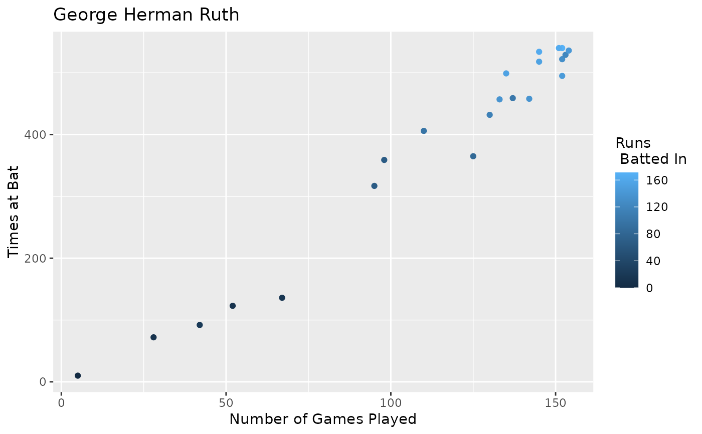

Baseball statistics for George Herman Ruth (The Bambino or the Sultan of Swat)
BABERUTH
A data frame with 22 observation of the following 14 variables:
year (year in which the season occurred)
team (team for which he played Bos-A, Bos-N, or NY-A)
g (games played)
ab (at bats)
r (runs scored)
h (hits)
X2b (doubles)
X3b (triples)
hr (home runs)
RBI (runs batted in)
sb (stolen bases)
bb (base on balls or walks)
ba (batting average = h/ab)
slg (slugging percentage = total bases/at bats)
http://www.baseball-reference.com/about/bat_glossary.shtml
Ugarte, M. D., Militino, A. F., and Arnholt, A. T. 2015. Probability and Statistics with R, Second Edition. Chapman & Hall / CRC.
ggplot(data = BABERUTH, aes(x = ba)) + geom_histogram(binwidth = 0.03) + facet_grid(team ~ .) + labs(x = "Batting average")ggplot(data = BABERUTH, aes(x = g, y = ab, color = rbi)) + geom_point() + labs(x = "Number of Games Played", y = "Times at Bat", color = "Runs\n Batted In", title = "George Herman Ruth")